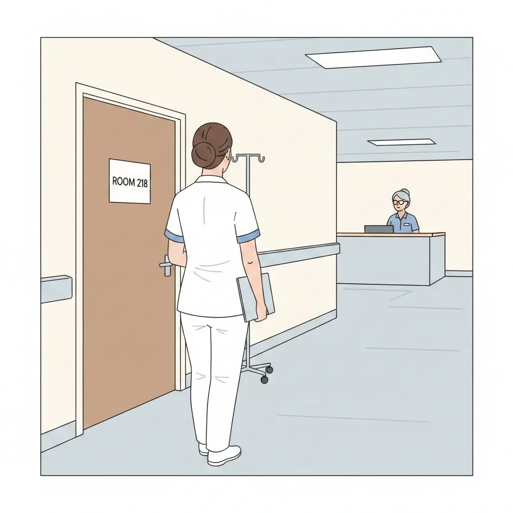

조용함을 위해 지어진 곳에서 다프네 마이아가 웃음을 터뜨렸다.
[Daphne Maia laughed in a place built for quiet.]
그 소리는 에버그린 호스피스의 소독약 냄새가 밴 복도를 따라 울려 퍼졌고, 간호사실에 있던 로레인 타이너의 익숙한 표정을 끌어냈다. 웃음이 사소한 위반 행위, 거의 태만에 가까운 일이라는 듯한 표정이었다.
[The sound traveled down the antiseptic hallway of Evergreen Hospice and drew the familiar look from Lorraine Tiner at the nurses’ station—the one that suggested laughter was a minor offense, just shy of negligence.]
“마이아,” 로레인이 은테 안경을 코끝으로 밀어내며 말했다. “여긴 존엄의 공간이에요.”
[“Maia,” Lorraine said, silver-rimmed glasses sliding down her nose, “this is a place of dignity.”]
“그리고 어떤 사람들은 유머로 그걸 버텨요.” 다프네는 클립보드를 팔에 끼며 말했다. “애버내시 부인은 돌아가신 남편이 계속 틀니를 숨긴대요. 제가 뭘 해야 하죠? 유령이랑 말다툼이라도 할까요?”
[“And humor is how some people survive it,” Daphne said, tucking her clipboard under her arm. “Mrs. Abernathy says her dead husband keeps hiding her dentures. What am I supposed to do—argue with a ghost?”]
로레인은 입술을 꼭 다물었다. “부적절한 웃음에 대해 뭐라고들 하는지 알잖아요.”
[Lorraine pressed her lips together. “You know what they say about inappropriate laughter.”]
“기도보다 빠르고 모르핀보다 싸다는 거요?”
[“That it works faster than prayer and costs less than morphine?”]
잠깐의 침묵. 로레인의 입꼬리가 본의 아니게 꿈틀했다.
[A pause. The corner of Lorraine’s mouth twitched despite itself.]
“새 입원 환자예요.” 그녀가 차트를 밀어주며 말했다. “218호실. 말기 췌장암. 석 달. 길어야 그 정도요.”
[“New admission,” she said, sliding over a chart. “Room 218. Terminal pancreatic. Three months. If that.”]
다프네는 고개를 끄덕이고 복도를 따라 걷기 시작했다. 어두운 유머가 자동으로 줄을 섰다. 팬케이크, 아침 시리얼, 배신자로 돌변한 장기들의 잔혹할 만큼 효율적인 작동. 그게 그녀의 준비 방식이었다. 다른 모든 게 무너질 때도 유머는 버텼다.
[Daphne nodded and started down the hall. Dark humor lined itself up automatically—pancakes, breakfast cereals, the cruel efficiency of organs turning traitor. It was how she prepared. Humor held when everything else failed.]
그녀는 걸음을 옮기며 차트를 펼쳤다.
[She opened the chart mid-stride.]
빅터 택. 예순일곱.
[Victor Tac. Sixty-seven.]
복도가 길어지는 듯했고, 바닥이 신발 아래에서 멀어져 갔다. 열일곱 해. 그의 필체를 마지막으로 본 게 그만큼 전이었다. 그가 등을 돌리고 떠나며 카운터 위에 땀이 맺힌 버번 한 병과, 결코 메아리치기를 멈추지 않은 한 문장을 남긴 뒤로. 어떤 사람들은 부모가 될 운명이 아니다.
[The hallway seemed to stretch, the floor pulling away beneath her shoes. Seventeen years. That was how long it had been since she’d seen his handwriting. Since he’d walked out and left a bottle of bourbon sweating on the counter and a sentence that never stopped echoing: Some people aren’t meant to be parents.]
그녀의 손이 벽에 닿았다. 차갑고. 단단하고. 현실적인 감촉.
[Her hand met the wall. Cold. Solid. Real.]
“그 이름, 알고 있어요.” 뒤에서 로레인이 말했다.
[“I know the name,” Lorraine said behind her.]
다프네는 돌아섰다.
[Daphne turned.]
“재배정을 원하시면,” 로레인이 조심스럽게 말을 이었다. “말만 하세요.”
[“If you want reassignment,” Lorraine continued carefully, “say the word.”]
“괜찮아요.” 다프네가 말했다.
[“I don’t,” Daphne said.]
로레인은 보이지 않는 무언가를 저울질하듯 그녀를 살폈다. 이윽고 숨을 내쉬었다. “인력이 부족해요. 본인이 당신이란 걸 알고 나서 계속 담당해 달라고 했어요.” 잠시 멈췄다가 덧붙였다. “후회하게 만들지 마요.”
[Lorraine studied her, weighing something unseen. Finally, she exhaled. “We’re short-staffed. He requested continuity once he realized who you were.” A beat. “Don’t make me regret this.”]
다프네는 한 번 고개를 끄덕이고 계속 걸었다.
[Daphne nodded once and kept walking.]
218호실 앞에서 그녀는 잠시 멈췄다. 공기에는 소독약과 오래된 숨 냄새가 섞여 있었다. 그녀는 수백 명을 마지막 날들로 이끌어왔다. 그들 중 누구도 자전거 타는 법을 가르쳐 주지 않았고, 누구도 떠나지 않았다.
[Outside Room 218, she paused. The air smelled like disinfectant and old breath. She had guided hundreds of people through their final days. None of them had taught her how to ride a bike. None of them had left.]
빅터는 눈을 감은 채 누워 있었고, 피부는 누렇게 변해 그녀가 알아보는 뼈 위로 팽팽히 당겨져 있었다. 그의 손은 시트 위에 얹혀 있었다. 한때는 아무 힘 들이지 않고 그녀를 공중으로 들어 올리던 손의, 가늘고 연약한 버전이었다.
[Victor lay with his eyes closed, skin yellowed and drawn tight across bones she recognized. His hands rested on the sheets—thin, fragile versions of hands that had once lifted her into the air without effort.]
“택 씨?” 그녀의 직업적인 목소리. 따뜻하고. 절제된.
[“Mr. Tac?” Her professional voice. Warm. Controlled.]
그의 눈이 열렸다. 헤이즐색. 그녀와 같은 색이었다.
[His eyes opened. Hazel. The same as hers.]
그의 얼굴에 알아봤다는 기색이 스쳤고, 이어 부끄러움 같은 것이 뒤따랐다.
[Recognition crossed his face, followed by something like shame.]
“글쎄요,” 그가 쉰 목소리로 말했다. “이건 일부러 그런 느낌이 드는군요.”
[“Well,” he said hoarsely, “this feels deliberate.”]
막기도 전에 웃음이 새어 나왔다. “그게 제 특기예요.”
[A laugh escaped her before she could stop it. “That’s my specialty.”]
“넌 항상 내 최고의 소재를 훔쳐 갔지.” 그는 힘없이 의자를 가리켰다. “앉을래?”
[“You always did steal my best material.” He gestured weakly toward the chair. “Sit?”]
“전 간호사예요.” 다프네가 IV를 확인하며 말했다. “딸은 아니고요.”
[“I’m your nurse,” Daphne said, checking his IV. “Not your daughter.”]
“둘 다는 안 될까?”
[“Can’t you be both?”]
“십칠 년이나 늦었어요.”
[“Seventeen years too late.”]
그는 웃다가, 몸을 안으로 접을 만큼 세게 기침을 했다. 다프네는 반사적으로 움직였다. 물을 들어 올리고, 그의 손을 받쳐 주었다. 그 친밀함은 몸에 밴 것이었지만, 익숙함은 아니었다.
[He laughed, then coughed hard enough to fold himself inward. Daphne moved automatically, lifting the water, steadying his hand. The intimacy was practiced. The familiarity was not.]
“맞는 말이네.” 기침이 가라앉자 그가 말했다. “협상할 시간도 많지 않거든.”
[“Fair,” he said when it passed. “I’ve got limited time to negotiate.”]
“두 달이에요.” 그녀가 말했다. “어쩌면 그보다 더 짧을 수도 있고요.”
[“Two months,” she said. “Maybe less.”]
그는 희미하게 웃었다. “여전히 솔직하군.”
[He smiled faintly. “Still honest.”]
“스스로를 미화하지 마세요.”
[“Don’t flatter yourself.”]
“안 그럴게.” 그의 시선이 그녀의 스크럽과 배지를 훑었다. “넌 누군가가 됐구나.”
[“I won’t.” His eyes traced her scrubs, her badge. “You became someone.”]
“당신 덕분이 아니라요.”
[“Despite you.”]
“어쩌면 나 덕분일 수도 있지.” 그가 침을 삼켰다. “난 엉망이었어. 남아 있었으면 널 망쳤을 거야.”
[“Because of me, maybe.” He swallowed. “I was a disaster. Staying would’ve ruined you.”]
“떠난 걸 고귀하게 포장하지 마요.”
[“Don’t make leaving sound noble.”]
“고귀하진 않았지. 그냥 필요했을 뿐이야.”
[“It wasn’t noble. Just necessary.”]
그녀는 모르핀 점적을 조절했다. 아까보다 조금 더.
[She adjusted the morphine drip. A touch more than before.]
“럭키 참스 아직도 제일 좋아하니?” 그가 물었다.
[“Lucky Charms still your favorite?” he asked.]
기억이 예상보다 세게 밀려왔다. “업그레이드했어요. 시나몬 토스트 크런치로.”
[The memory hit harder than she expected. “I upgraded. Cinnamon Toast Crunch.”]
“그럴 줄 알았어.” 그가 말했다. “넌 항상 빨리 앞으로 나아갔지.”
[“Figures,” he said. “You always moved on fast.”]
그녀의 턱이 굳어졌다. “엄마는 끝까지 웃었어요.” 그녀가 말했다. “아플 때조차.”
[Her jaw tightened. “My mother laughed until the end,” she said. “Even when it hurt.”]
그의 눈이 반짝였다. “그랬지, 항상.”
[His eyes shone. “She always did.”]
기계음이 침묵을 채운 채, 그들은 그렇게 앉아 있었다.
[They sat with the machines filling the silence.]
“농담 하나 있어.” 빅터가 말했다.
[“I’ve got a joke,” Victor said.]
“아니요.” 다프네가 답했다. “아직은요.”
[“No,” Daphne replied. “Not yet.”]
그는 고개를 끄덕였다. “나중에라도.”
[He nodded. “Maybe later.”]
그녀는 일어섰다. “회진이 있어요.”
[She stood. “I have rounds.”]
“난 여기 있을게.” 그가 말했다. “이번엔 어디 안 가.”
[“I’ll be here,” he said. “Not going anywhere this time.”]
문 앞에서 그의 목소리가 그녀를 멈춰 세웠다.
[At the door, his voice stopped her.]
“기능을 못 하는 췌장을 뭐라고 부르는지 알아?”
[“What do you call a pancreas that doesn’t work?”]
그녀는 돌아섰다.
[She turned.]
“판-캔트-리아스.”
[“A pan-can’t-reas.”]
그 농담은 형편없었다. 진부했다. 너무나도 그다웠다.
[The joke was terrible. Old. Exactly his.]
가슴 한가운데서 무언가가 풀어졌다.
[Something loosened in her chest.]
“끔찍했어요.” 그녀가 말했다.
[“That was awful,” she said.]
“더 좋은 것도 있어.” 그가 낮게 말했다. “곁에 좀 있어.”
[“I’ve got better ones,” he said softly. “Stick around.”]
그녀는 대답하지 않았다. 하지만 방을 나설 때, 그녀는 웃지 않았다. 그리고 처음으로, 그게 진전처럼 느껴졌다.
[She didn’t answer. But when she left the room, she didn’t laugh, and for once, that felt like progress.]